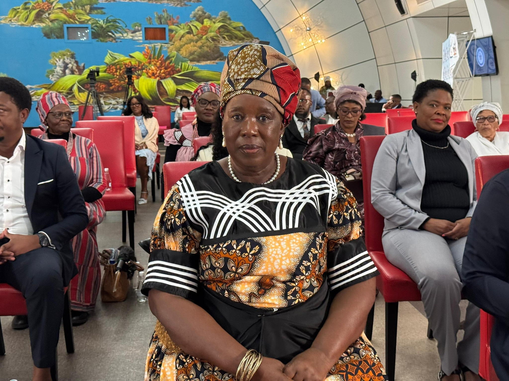

About
A Foundation built on unity, dignity, and opportunity.
A Namibian non-profit organisation advancing welfare, enterprise, agriculture, youth and women empowerment, and accountable partnerships across the Zambezi Region.
Who we are
A community-centred foundation built for practical, measurable development.
The Dorothy Kabula Welfare Foundation brings together communities, public institutions, donors, investors, and development partners to support inclusive social and economic progress in the Zambezi Region.

Leadership
Hon. Dorothy Mareka Kabula
Founder and Chairperson
Founder and Chairperson of the Foundation and the first female Governor of the Zambezi Region. Her leadership reflects a lifelong commitment to community upliftment, gender equality, youth empowerment, and inclusive economic participation.
Governance
Transparent leadership and accountable oversight.
Board of Directors
- Dr. Cedric Mwanota Limbo
- Mr. Richwell Lukonga
- Mr. Shakwa Nyambe
Foundation Members
- Ms. Matakala Clarina Likokoto
- Mr. Godwin Mubusis Lemu
- Ms. Priscaha Namasiku Makabi
The Foundation upholds transparency, responsible stewardship, and accountability in managing programmes, partnerships, and resources.
Purpose
Advancing unity, dignity, and sustainable socio-economic development.
The Foundation was established as a collaborative platform for mobilising communities, government institutions, the private sector, investors, and development partners toward inclusive regional growth and long-term social impact.
Legal Status
Registered non-profit association
Non-Profit Making Association incorporated under Section 21 and registered in accordance with the laws and governance framework of Namibia.Accountability
Built for responsible partnership
Programme delivery is guided by governance oversight, partnership alignment, and a commitment to measurable community benefit.The Foundation at a glance
1
Region focus: Zambezi
5
Core programme pillars
2
Governance bodies
4
Partnership pathways